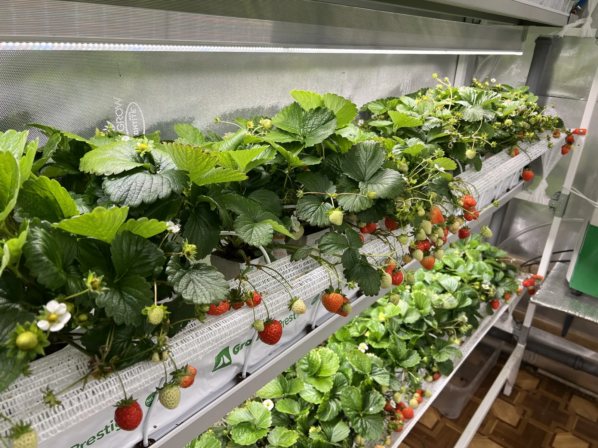

Почему смотрят Delizzimo
- Нужен яркий вкусовой профиль и хороший аромат.
- Есть задача сочетать качество ягоды и стабильную урожайность.
- Важен сорт с ранним стартом и понятной коммерческой подачей.



Ранний гибрид для тех случаев, когда сорт смотрят через вкус, аромат и стабильность сбора, а не через абстрактную “красивую ягоду”. Delizzimo F1 имеет смысл в коммерческой логике, если нужен сильный потребительский профиль без потери урожайности.